１．概要
- 実際の作品とそのタイトル 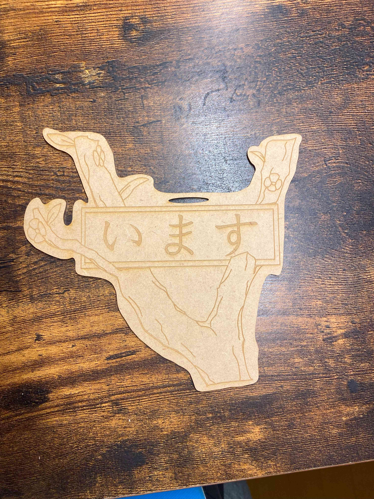 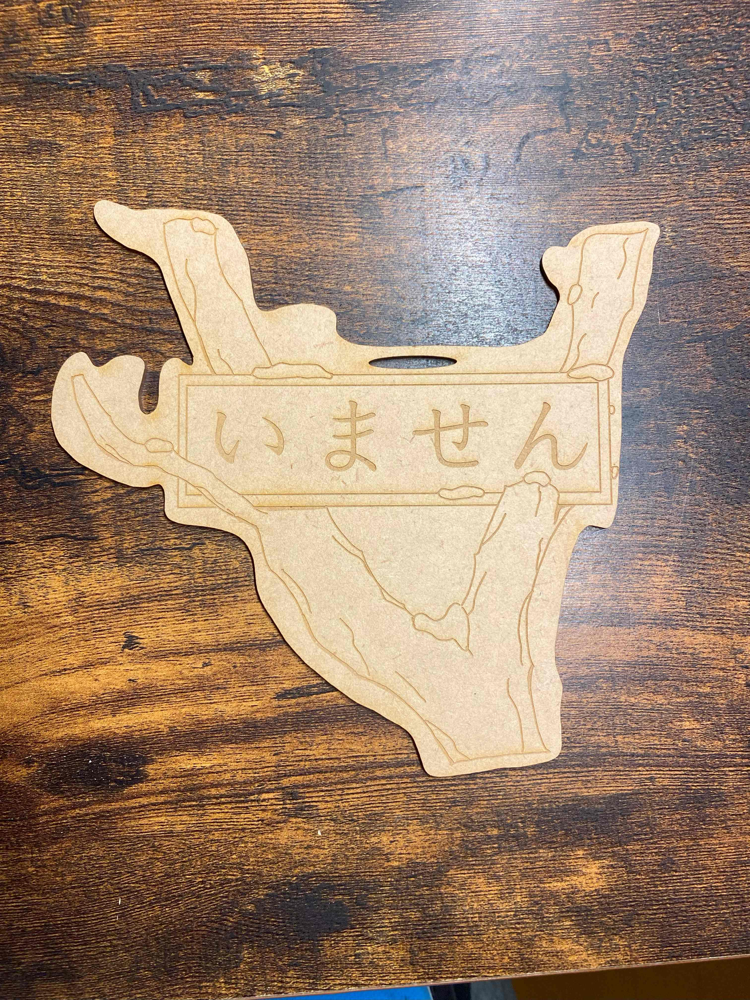
タイトル：春冬プレート
作品の説明：不在か在中かを教えるためのプレート。
春と冬をイメージできるように木の枝部分をプレートにするデザインにした。
またフォントについてもゴシック体といった硬いもの以外にすることによってイメージを柔らかくしている。
この作品を作った理由：今回の課題は他人もしくは自分の心を動かすような作品を作ろうというコンセプトだったが、
心をどのような方向へ動かすのか、そしてそれは期限的にも製作可能なものなのかといった制約や方向性で難儀した。
そんな中で、私が幼稚園児のころに季節の移り変わりをテーマにした作品があり、
そこから着想を得て今回のプレートを作成した。
２．製作過程
- スケッチ まず頭の中でできているものを書いておく
- データの製作 今回は2Dの平面の作品となるため、デザインに注力したかった。
- レーザーカッターでの切り出し レーザーカッターを使って切り出す。
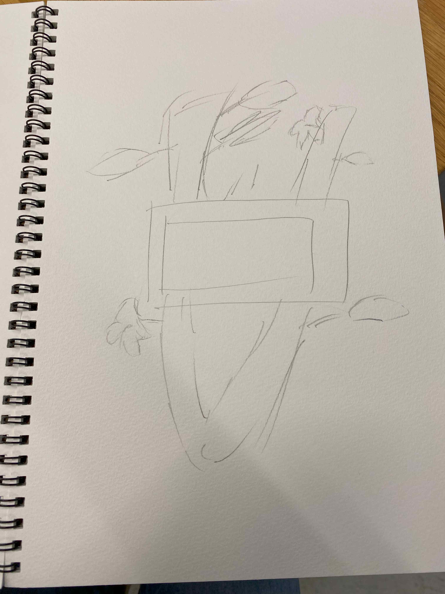
そのため、自分が慣れていないため操作難易度が高くデザイン性があげにくいFusion等を避け、
イラストを描くことが専門のclip stadioを使った。
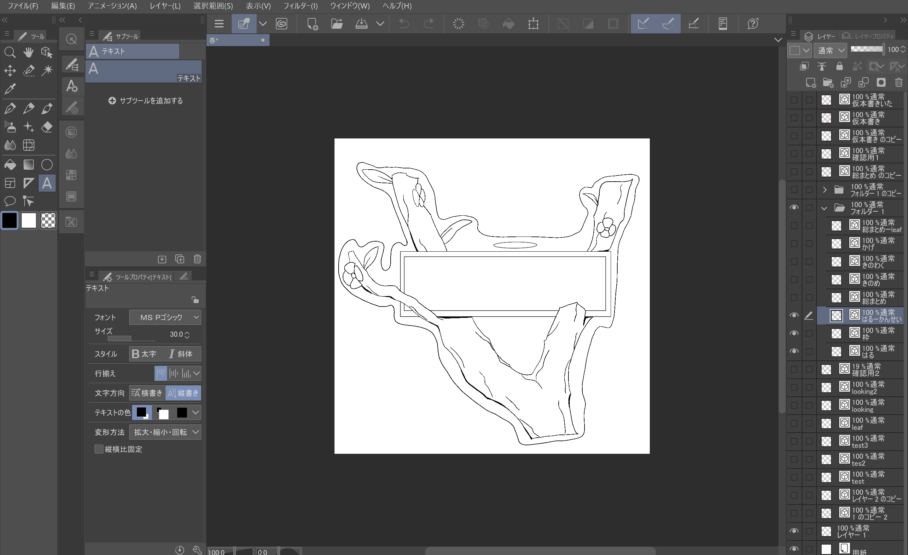
注意点としてはclip stadioもgravitと同様に「ベクター書き出し」でsvg形式のファイルを作ることはできる。
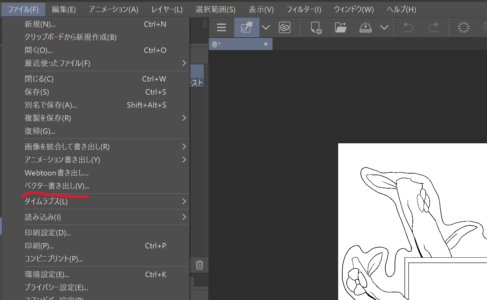
ただし先にベクター方式のレイヤーで事前に設定していないといけない。
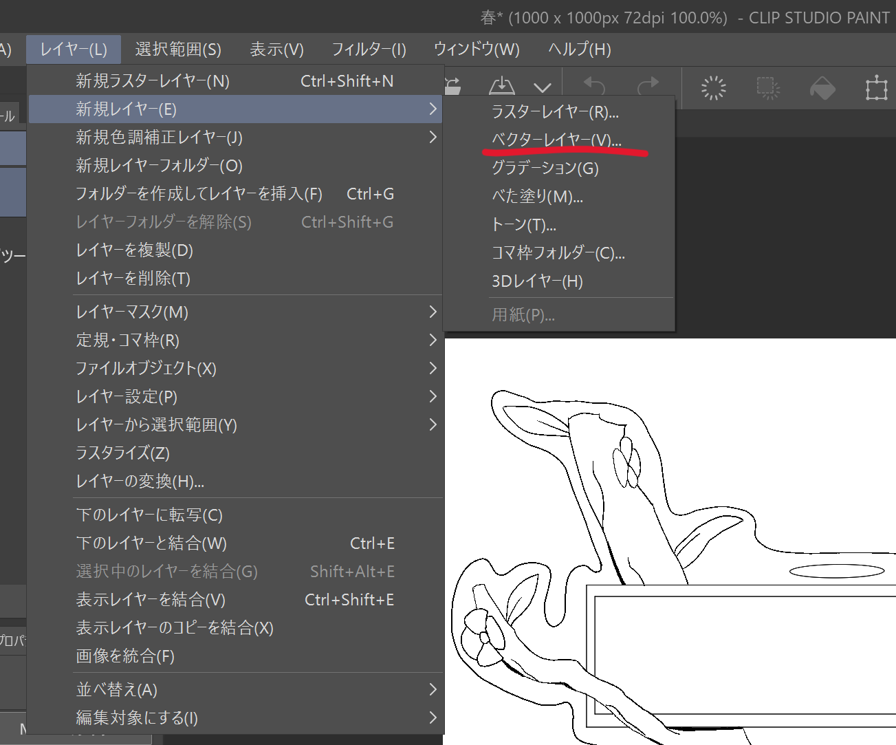
また文字の入力に関してはベクター方式では（分かっている範囲では）不可能なのでイラレで後付けする必要がある。
主な手順はデジファブの説明通り。
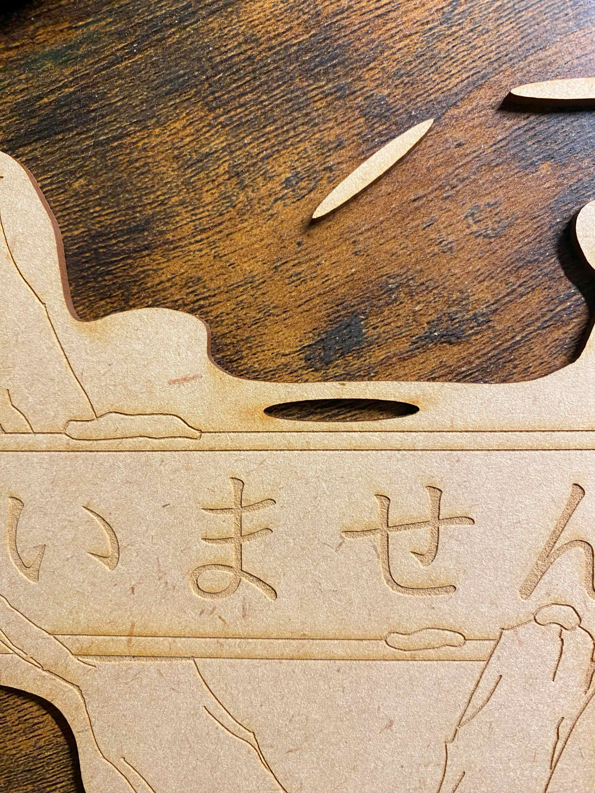
切り出すために赤色にした線はすべて切るので穴を作ったりもできる。
３．春冬プレート以外の案のスケッチ
- 歯車を手にくっつける 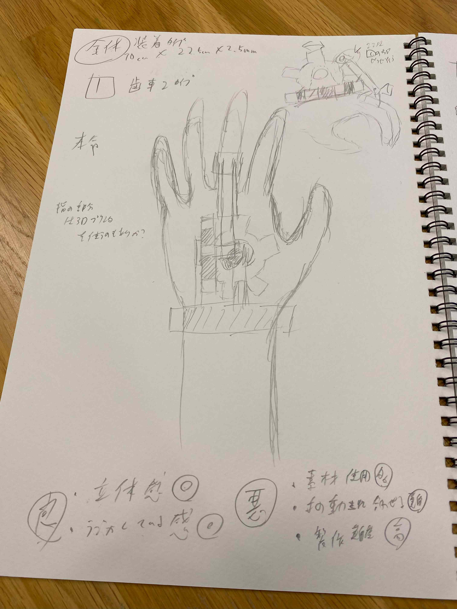
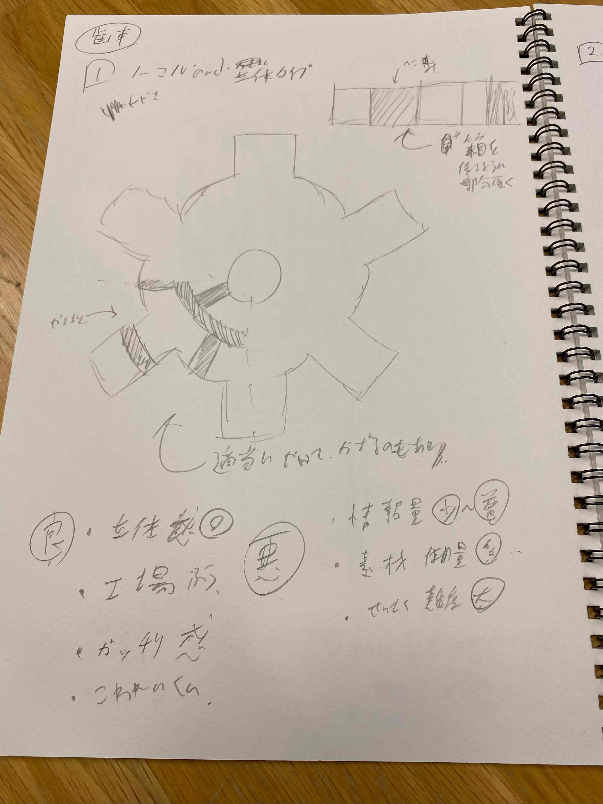
歯車を手に付けれるようにして指の動きに連動して回転するようにしようとしたもの
体に機械がくっついている、いわばスチームパンク版パワードスーツ（手のみ）を目指そうとした。
しかし歯車が回転する機構はもちろん、歯車を箱のようにする場合は加工の難易度が高くなり、
その上に材料も大量に使ってしまうことや、手の動きの柔軟さも考慮しなければならなかった。
それ以外のもろもろの問題も含めて今回は断念した案。
４．製作物を作っている最中に気づいたこと
今回は主にclip stadioを使ってSVGファイルを作った際に気づいたことを挙げていく
- 塗りつぶしができない 線の色を変えたり、一部分を同じ色にするおなじみの塗りつぶしはおそらくベクター方式の特徴によって使えなかった
- ロックが使えない clip stadioには透明ピクセルをロックといわれる書かれた線のみに変更を加えることができる機能がある
- 文字は入れることができない 文字を入れる際に文字のレイヤーがベクター方式にできないため、文字を入れることができない
- 線の太さが変わる clip stadioに限らないがタッチパネル系でイラストを描く際に、力の入れ具合で線の太さがかわる機能がついているソフトがある
そのため塗りつぶしが効かないところや一部色を変えたいときに使えるが、こちらも使うことができなかった。 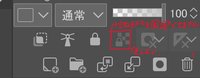
そういった機能はアナログで絵を描く感覚で書けるように工夫されたものだがおそらくベクター方式では元の線の太さのみを参照しているらしい
そのため力を入れて線を太くしてもSVGファイルにすると線の太さは変わらない 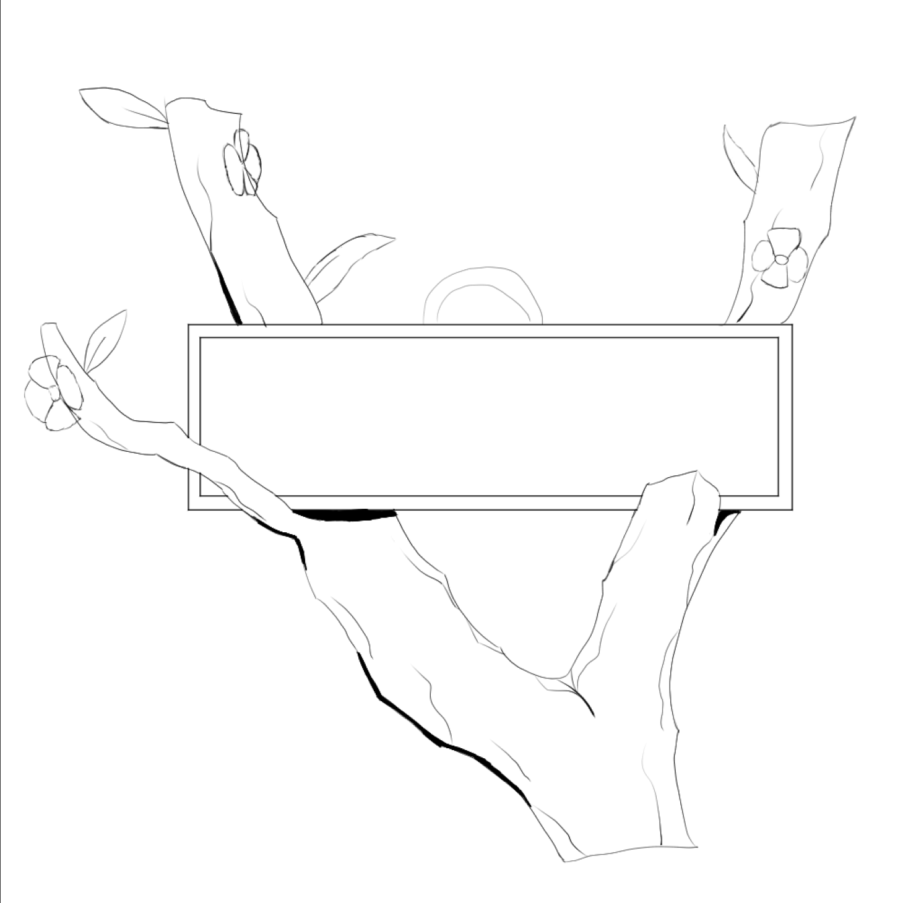
左がclip stadioのときのイラストで右がSVG変換後 左では細い千なのに右で濃くなっているのは、先述した通り力の入れ具合による太さではなく、設定時の太さを参照しているため
５．製作物のファイル
- 春冬プレート svgファイル
{kind=link}
※文字の入力は大学のPCで行ったためこのファイルでは文字のみ入っていません。
デザイン自体はそのまま入っているのでご容赦いただければ幸いです。